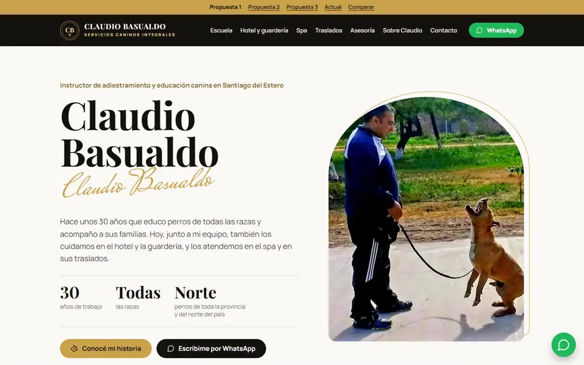
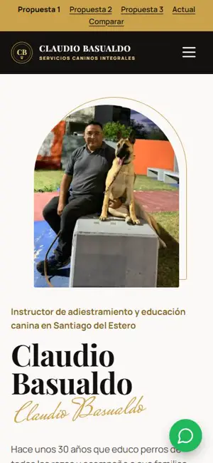
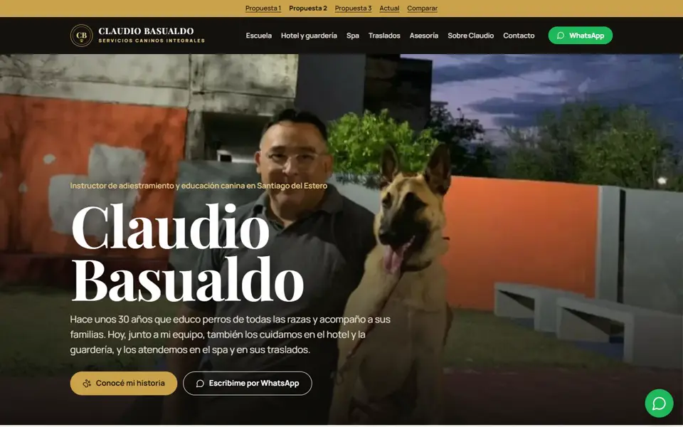
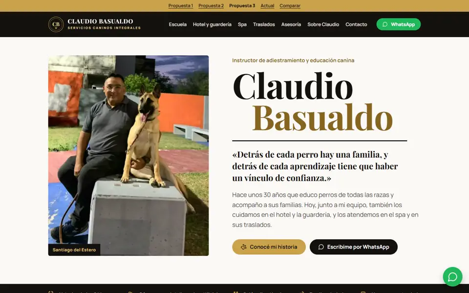
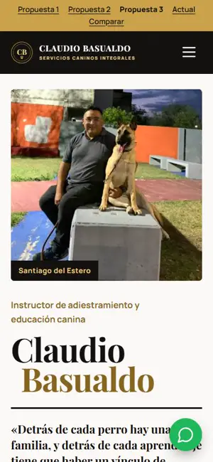

Tres propuestas para la portada
Las tres presentan a Claudio primero, como pediste. Cambia la forma y el movimiento. Abrilas en el celular y en la compu, y contanos cuál te gusta más; también se pueden mezclar.


Propuesta 1Carta de presentaciónFondo claro y cálido. Su retrato en un marco en arco, su nombre grande y su firma que se escribe sola. Abajo, tres datos: 30 años (el número sube al entrar), todas las razas y el norte del país.Ver la propuesta 1
Propuesta 2Pantalla completaSu foto ocupa toda la pantalla, con el nombre encima. Al bajar, la foto se aleja despacio y su historia se cuenta en cuatro capítulos: la foto queda fija al costado y cambia con cada uno.Ver la propuesta 2

Propuesta 3Revista y trayectoriaRetrato vertical con su frase al lado, como una nota de revista. Debajo, una línea de tiempo que se desliza: sus comienzos, la columna en Panorama, el documental, la entrevista en LV11 y hoy.Ver la propuesta 3